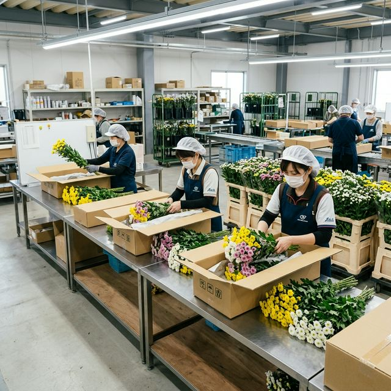
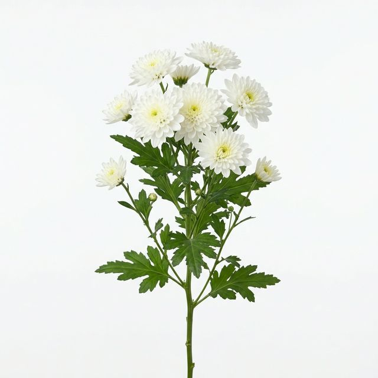

For Buyers / 花屋・市場の方へ
豊かな土壌と、丁寧な土づくり。
Origin of Quality / 品質の源
私たちが大切にしているのは、規格の数字だけではありません。
愛知県豊川市は、一年を通して温暖な気候に恵まれた地域です。
私たちの圃場は、清流・豊川（とよがわ）の恩恵を受けた肥沃な土地にあり、そこから力強く美しいスプレーマムが育ちます。
良い花は、良い土から。収穫を終えるごとに丁寧な土壌診断を行い、土を休ませ、自然のバランスを整える「土づくり」に何よりも時間をかけています。
共選共販の強みを活かし、市場へ送り出す前に部会全体での厳格な検査を実施しています。外見の美しさだけでなく、日持ちの良さや茎の強さなど、長年の経験を持つ現場の目による品質保証体制を敷いています。
Varieties / 品種構成
秋系・夏秋系を組み合わせた周年出荷体制。
自然開花期が秋の品種群。温度・日長管理により出荷時期を調整。深みのある色合いが特徴。
レミダス、プリンス、トリリー、パラダイス 等
夏から秋にかけて開花する品種群。明るい色合いが多く、夏場の需要に対応。
白・黄・ピンク・オレンジ・グリーン 等の多色展開

※品種データベースは準備中です。個別のご要望についてはお問い合わせください。
Why Choose Us / 選ばれる理由
昭和49年の導入以来、50年以上かけて培った栽培技術と土づくり。49名の生産者が、現場の誇りにかけて安定供給をお約束します。
49名の生産者による分散栽培で、天候リスクを低減。年間を通じて安定した出荷量を維持しています。
部会の統一基準に基づく共選で、どの農家の花を仕入れても同じ品質。安心してお取引いただけます。
東京・大阪・名古屋など主要エリアへの安定した出荷ルートを確保しています。
仕入れ・サンプル・品種リストのご要望は
お気軽にお問い合わせください。